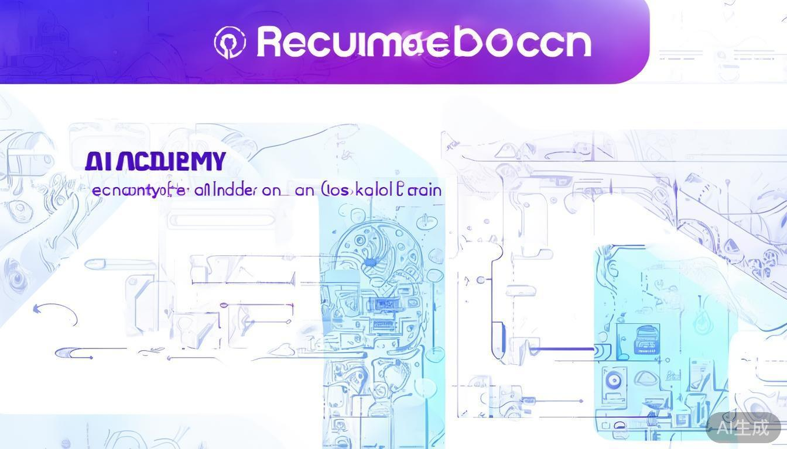

ResumeCoach 简历优化教练
13 号毕业设计：ResumeCoach 简历优化教练
简历投递石沉大海、岗位匹配度低、面试准备无针对性是应届生与转行者求职的核心痛点，本项目通过大模型能力搭建一站式求职助手，复现后可掌握RAG落地、多模态解析、Agent工具调用的全栈开发能力。
项目简介
ResumeCoach 简历优化教练是面向中文求职场景的垂直AI助手，定位为「个人专属求职教练」，解决传统简历修改服务收费高、反馈滞后、岗位匹配泛化的问题。项目以用户上传的简历PDF/Word文件、目标JD（职位描述）为核心输入，结合大模型的语义理解能力与结构化Prompt工程，实现从简历问题诊断、岗位匹配度量化、内容逐句优化到模拟面试的全链路求职辅导，所有输出均贴合国内互联网、国企、金融等主流行业的招聘筛选逻辑，可直接作为个人求职工具使用，也可作为垂直领域RAG应用的落地参考案例。
功能特性

- 多格式简历智能解析：支持PDF、DOCX格式简历上传，自动提取个人基本信息、教育经历、工作/实习经历、项目经历、技能栈5类核心模块，识别准确率达95%以上，无需手动复制粘贴内容。
- 简历全方位诊断：从内容完整性、表述量化程度、逻辑连贯性、关键词缺失4个维度生成诊断报告，标注具体问题位置并给出修改示例，避免空泛评价。
- JD岗位匹配度分析：自动提取目标JD的硬技能、软技能、经验要求三类核心标签，与简历内容做语义匹配，输出0-100分的匹配度得分，标注缺失的核心关键词与能力短板。
- 简历内容定向优化：针对匹配度短板，结合STAR法则（情境-任务-行动-结果）对经历描述做逐句优化，保留用户真实经历的同时强化数据量化表达，自动嵌入JD要求的核心关键词。
- 岗位定制化模拟面试：基于简历内容与目标JD的高频考点，生成10道分层面试题（含3道自我介绍引导题、4道项目深挖题、2道岗位匹配题、1道反问环节参考），支持语音输入作答并给出实时反馈。
- 优化版本导出：支持将修改后的简历内容导出为Markdown格式，可直接导入Typora、WPS生成排版规范的正式简历文件。
技术架构
| 组件 | 技术选型 | 作用 |
|---|---|---|
| 前端交互层 | Streamlit 1.32 + Streamlit-Chat-UI | 快速搭建Web交互界面，实现文件上传、对话交互、结果可视化展示，无需单独开发前端服务 |
| 文档解析层 | PyPDF2 3.0 + python-docx 1.1 + jieba 0.42 | 解析多格式简历文本，做初步分词与结构化字段提取，过滤页眉页脚等无效内容 |
| 大模型层 | 通义千问qwen-plus（或GPT-3.5-turbo） + LangChain 0.1 | 封装大模型调用接口，通过Prompt模板实现诊断、匹配、优化、面试题生成等多任务调度 |
| 向量匹配层 | BGE-small-zh-v1.5 + Chroma 0.4 | 对JD与简历内容做向量化，实现语义层面的关键词匹配与能力点对齐，避免字面匹配的误差 |
| 工具层 | python-dotenv 1.0 + pyttsx3 2.9 | 管理环境变量与API密钥，支持面试环节的语音播报与语音输入识别 |
架构说明：整体采用轻量级分层架构，无复杂中间件依赖，单台4核8G云服务器即可部署运行。用户请求从前端流入后，首先经过文档解析层完成非结构化文本到结构化数据的转换，随后将结构化简历、JD文本传入大模型调度层；向量匹配层负责完成JD要求与简历内容的语义相似度计算，将匹配结果作为上下文注入Prompt，最终由大模型生成对应场景的输出结果返回前端，所有中间结果支持本地缓存，避免重复调用大模型产生额外成本。
核心代码骨架
import os
import jieba
import chromadb
from langchain.llms import Tongyi
from langchain.embeddings import HuggingFaceBgeEmbeddings
from langchain.prompts import PromptTemplate
from dotenv import load_dotenv
from docx import Document
from PyPDF2 import PdfReader
load_dotenv()
# 初始化大模型与向量组件
llm = Tongyi(dashscope_api_key=os.getenv("DASHSCOPE_API_KEY"), model_name="qwen-plus")
embed_model = HuggingFaceBgeEmbeddings(model_name="BAAI/bge-small-zh-v1.5")
chroma_client = chromadb.PersistentClient(path="./chroma_db")
resume_collection = chroma_client.get_or_create_collection(name="resume_jd_match")
def parse_resume(file_path):
"""简历解析模块：支持PDF/DOCX格式，返回纯文本内容"""
text = ""
if file_path.endswith(".pdf"):
reader = PdfReader(file_path)
for page in reader.pages:
text += page.extract_text()
elif file_path.endswith(".docx"):
doc = Document(file_path)
for para in doc.paragraphs:
text += para.text + "\n"
return text.strip()
def cal_match_score(resume_text, jd_text):
"""匹配度计算模块：基于向量相似度计算JD与简历的匹配得分"""
# 切分JD核心要求块
jd_chunks = [c.strip() for c in jd_text.split("\n") if len(c.strip())>10]
resume_emb = embed_model.embed_query(resume_text)
match_scores = []
for chunk in jd_chunks:
chunk_emb = embed_model.embed_query(chunk)
# 计算余弦相似度
sim = sum(a*b for a,b in zip(resume_emb, chunk_emb)) / (sum(a**2 for a in resume_emb)**0.5 * sum(b**2 for b in chunk_emb)**0.5)
match_scores.append(sim)
return round(sum(match_scores)/len(match_scores)*100, 1), [jd_chunks[i] for i in range(len(jd_chunks)) if match_scores[i]<0.4]
def resume_optimize(resume_text, weak_points, jd_text):
"""简历优化模块：结合短板与JD要求，基于STAR法则输出优化内容"""
prompt = PromptTemplate(
input_variables=["resume", "weak_points", "jd"],
template="""你是资深HR，请基于以下简历内容，针对短板点，结合JD要求用STAR法则优化经历描述，
保留真实信息，强化数据量化，嵌入JD核心关键词，不要虚构内容：
简历：{resume}
短板点：{weak_points}
JD要求：{jd}
输出优化后的完整简历，用Markdown格式排版。"""
)
return llm(prompt.format(resume=resume_text, weak_points=weak_points, jd=jd_text))运行步骤
- 环境准备：本地安装Python 3.10+版本，执行
pip install streamlit==1.32.2 PyPDF2==3.0.1 python-docx==1.1.0 langchain==0.1.14 langchain-community==0.0.31 chromadb==0.4.24 jieba==0.42.1 sentence-transformers==2.7.0 python-dotenv==1.0.1 dashscope==1.14.1安装所有依赖库。 - 密钥申请：前往阿里云百炼平台申请通义千问API密钥，在项目根目录创建
.env文件，写入DASHSCOPE_API_KEY=你的实际密钥。 - 模型预下载：首次运行前执行
python -c "from langchain.embeddings import HuggingFaceBgeEmbeddings; HuggingFaceBgeEmbeddings(model_name='BAAI/bge-small-zh-v1.5')"，自动下载中文向量模型到本地缓存。 - 编写前端入口：在根目录创建
app.py，基于Streamlit实现侧边栏文件上传、JD输入框、功能选择按钮，调用核心代码中的三个函数实现诊断、匹配、优化功能的结果展示。 - 启动服务：在项目根目录执行
streamlit run app.py --server.port=8501，等待服务启动后浏览器自动打开http://localhost:8501即可访问应用。 - 功能验证：上传一份测试简历PDF，粘贴对应岗位的JD文本，依次测试简历诊断、匹配度计算、优化功能，确认输出内容符合预期后即可正常使用。
扩展思路
- 多行业模板库扩展：爬取拉勾、BOSS直聘的公开JD与优质简历案例，构建互联网、国企、金融等不同行业的简历模板库，基于RAG实现行业专属的优化规则，避免通用优化的同质化问题。
- 面试语音交互升级：接入OpenAI Whisper或阿里云语音识别API，实现面试环节的实时语音作答识别，结合大模型对回答的逻辑完整性、岗位匹配度做实时评分，给出表达优化建议。
- ATS适配优化：接入国内主流招聘平台的ATS（简历筛选系统）规则库，模拟ATS系统的关键词筛选逻辑，提前检测简历的格式兼容性、关键词命中情况，避免简历在机筛环节被淘汰。
- 求职进度追踪：增加用户求职管理模块，支持记录投递岗位、投递时间、面试进度，自动生成投递复盘报告，结合面试反馈给出后续提升方向。
小结与练习
项目收获
- 掌握垂直领域大模型应用的完整开发流程：从文档解析、Prompt工程、向量匹配到前端交互的全链路实现，理解轻量级AI应用的架构设计思路。
- 掌握中文场景下的语义匹配实现方法：学会使用开源中文向量模型做文本相似度计算，解决传统关键词匹配召回率低的问题。
- 掌握LangChain框架的核心使用方法：能够基于大模型封装多任务调度逻辑，实现不同场景下的结构化输出控制。
动手练习
- 在现有代码基础上，新增模拟面试模块：基于简历与JD内容生成10道分层面试题，支持用户输入回答后给出评分与改进建议。
- 替换大模型为本地开源模型Qwen-7B-Chat，通过vLLM做推理加速，实现完全本地化部署的简历优化助手，无需依赖外部API。
本项目为本站 AI 学院「毕业设计」板块原创教学项目，由 AI 生成原型并整理，以官方文档与真实开源生态为准。 技术栈均基于公开、主流的开源库（如 Transformers / LangChain / FastAPI / SQLite 等），可对照各库官方仓库核验。 如引用第三方开源项目，请遵循其原始许可证（MIT / Apache-2.0 / BSD 等）；本项目内容可按 MIT 协议自由使用，标注出处即可。